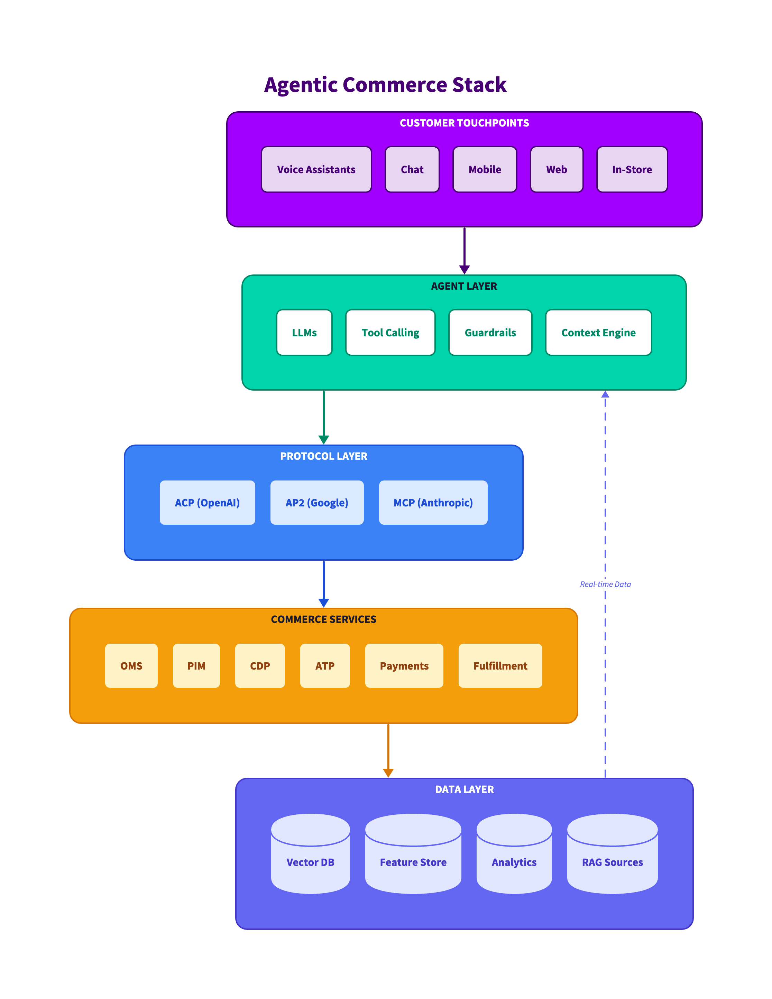

<!DOCTYPE html>
<html lang="en">
<head>
  <meta charset="UTF-8">
  <meta name="viewport" content="width=device-width, initial-scale=1.0">
  <title>GenAI & Agentic Commerce Glossary | Accenture Song Commerce</title>
  <script src="https://cdn.tailwindcss.com"></script>
  <script src="https://unpkg.com/react@18/umd/react.production.min.js"></script>
  <script src="https://unpkg.com/react-dom@18/umd/react-dom.production.min.js"></script>
  <script src="https://unpkg.com/@babel/standalone/babel.min.js"></script>
  <script>
    tailwind.config = {
      theme: {
        extend: {
          colors: {
            'song-purple': '#A100FF',
            'song-dark': '#460073',
            'song-light': '#E8D5F2',
            'song-accent': '#00D4AA',
          }
        }
      }
    }
  </script>
  <style>
    /* ==================== THEME SYSTEM ==================== */
    :root {
      --bg-page: #f5f3f7;
      --bg-card: #ffffff;
      --bg-card-alt: #faf8fc;
      --bg-header: linear-gradient(135deg, #460073 0%, #A100FF 100%);
      --text-primary: #1e1a2e;
      --text-secondary: #6b6280;
      --text-muted: #9f95b0;
      --text-on-dark: #ffffff;
      --text-on-dark-secondary: #d4b8e8;
      --border-color: #e8e0f0;
      --border-color-strong: #d0c4e0;
      --accent-purple: #A100FF;
      --accent-green: #00D4AA;
    }

    [data-theme="dark"] {
      --bg-page: #0f0a1a;
      --bg-card: #1a1428;
      --bg-card-alt: #251d38;
      --bg-header: linear-gradient(135deg, #0f0a1a 0%, #1a1428 100%);
      --text-primary: #f5f0fa;
      --text-secondary: #c4b8d8;
      --text-muted: #9085a8;
      --border-color: #2d2445;
      --border-color-strong: #3d3458;
      --accent-purple: #c44dff;
      --accent-green: #00ffcc;
    }

    [data-theme="high-contrast"] {
      --bg-page: #000000;
      --bg-card: #000000;
      --bg-card-alt: #1a1a1a;
      --bg-header: #000000;
      --text-primary: #ffffff;
      --text-secondary: #ffffff;
      --text-muted: #e0e0e0;
      --border-color: #ffffff;
      --border-color-strong: #ffffff;
      --accent-purple: #ff00ff;
      --accent-green: #00ffcc;
    }

    [data-theme="high-contrast"] * {
      border-color: #ffffff !important;
    }

    [data-theme="high-contrast"] .bg-gradient-to-r,
    [data-theme="high-contrast"] .bg-gradient-to-br,
    [data-theme="high-contrast"] .bg-gradient-to-b {
      background: #000000 !important;
      border: 2px solid #ffffff !important;
    }

    .theme-toggle {
      display: flex;
      align-items: center;
      gap: 4px;
      padding: 4px;
      background: rgba(255, 255, 255, 0.1);
      border-radius: 8px;
      border: 1px solid rgba(255, 255, 255, 0.2);
    }

    .theme-btn {
      padding: 6px 10px;
      font-size: 10px;
      font-weight: 600;
      text-transform: uppercase;
      letter-spacing: 0.03em;
      border-radius: 6px;
      cursor: pointer;
      transition: all 0.2s ease;
      color: rgba(255, 255, 255, 0.6);
      background: transparent;
      border: none;
    }

    .theme-btn:hover {
      color: white;
      background: rgba(255, 255, 255, 0.1);
    }

    .theme-btn.active {
      color: #460073;
      background: #00D4AA;
      font-weight: 700;
    }

    [data-theme="high-contrast"] .theme-btn.active {
      color: #000000;
      background: #00ffcc;
    }

    body {
      margin: 0;
      font-family: 'Segoe UI', system-ui, sans-serif;
      background: var(--bg-page);
      color: var(--text-primary);
      transition: background 0.3s ease, color 0.3s ease;
    }

    /* Dark theme overrides */
    [data-theme="dark"] .bg-white { background: var(--bg-card) !important; }
    [data-theme="dark"] .bg-slate-100, [data-theme="dark"] .bg-slate-50 { background: var(--bg-page) !important; }
    [data-theme="dark"] .bg-purple-50 { background: var(--bg-card-alt) !important; }
    [data-theme="dark"] .text-slate-800, [data-theme="dark"] .text-slate-700, [data-theme="dark"] .text-slate-900 { color: var(--text-primary) !important; }
    [data-theme="dark"] .text-slate-600, [data-theme="dark"] .text-slate-500 { color: var(--text-secondary) !important; }
    [data-theme="dark"] .text-purple-900 { color: #c44dff !important; }
    [data-theme="dark"] .text-purple-700 { color: #d070ff !important; }
    [data-theme="dark"] .border-slate-200, [data-theme="dark"] .border-slate-100, [data-theme="dark"] .border-purple-100 { border-color: var(--border-color) !important; }

    /* High contrast overrides */
    [data-theme="high-contrast"] .bg-white, [data-theme="high-contrast"] .bg-slate-100, [data-theme="high-contrast"] .bg-slate-50, [data-theme="high-contrast"] .bg-purple-50 {
      background: #000000 !important;
      border: 2px solid #ffffff !important;
    }
    [data-theme="high-contrast"] .text-slate-800, [data-theme="high-contrast"] .text-slate-700,
    [data-theme="high-contrast"] .text-slate-600, [data-theme="high-contrast"] .text-slate-500,
    [data-theme="high-contrast"] .text-slate-400, [data-theme="high-contrast"] .text-slate-900,
    [data-theme="high-contrast"] .text-purple-900, [data-theme="high-contrast"] .text-purple-700 {
      color: #ffffff !important;
    }
    [data-theme="high-contrast"] a { color: #00ffcc !important; text-decoration: underline !important; }
    [data-theme="high-contrast"] .rounded-full, [data-theme="high-contrast"] .rounded-lg,
    [data-theme="high-contrast"] .rounded-xl, [data-theme="high-contrast"] .rounded { border: 1px solid #ffffff !important; }

    .keyboard-hint {
      display: inline-flex;
      align-items: center;
      justify-content: center;
      min-width: 18px;
      height: 18px;
      padding: 0 4px;
      font-size: 10px;
      font-weight: 600;
      background: rgba(255, 255, 255, 0.2);
      border-radius: 3px;
      margin-left: 4px;
    }

    /* Flow Animations */
    @keyframes fadeSlideIn {
      from { opacity: 0; transform: translateY(8px); }
      to { opacity: 1; transform: translateY(0); }
    }

    .view-content {
      animation: fadeSlideIn 0.35s ease-out;
    }

    /* Card hover effects */
    .term-card {
      transition: all 0.2s ease;
    }

    .term-card:hover {
      transform: translateY(-2px);
      box-shadow: 0 8px 25px rgba(161, 0, 255, 0.15);
    }

    [data-theme="dark"] .term-card:hover {
      box-shadow: 0 8px 25px rgba(161, 0, 255, 0.25);
    }

    /* Category badge colors */
    .badge-protocols { background: rgba(161, 0, 255, 0.15); color: #A100FF; }
    .badge-orchestration { background: rgba(0, 212, 170, 0.15); color: #00A080; }
    .badge-aiml { background: rgba(59, 130, 246, 0.15); color: #3B82F6; }
    .badge-commerce { background: rgba(245, 158, 11, 0.15); color: #D97706; }
    .badge-geo { background: rgba(236, 72, 153, 0.15); color: #DB2777; }
    .badge-aeo { background: rgba(139, 92, 246, 0.15); color: #7C3AED; }
    .badge-data { background: rgba(34, 197, 94, 0.15); color: #16A34A; }

    [data-theme="dark"] .badge-protocols { background: rgba(196, 77, 255, 0.2); color: #c44dff; }
    [data-theme="dark"] .badge-orchestration { background: rgba(0, 255, 204, 0.15); color: #00ffcc; }
    [data-theme="dark"] .badge-aiml { background: rgba(96, 165, 250, 0.2); color: #60A5FA; }
    [data-theme="dark"] .badge-commerce { background: rgba(251, 191, 36, 0.2); color: #FBBF24; }
    [data-theme="dark"] .badge-geo { background: rgba(244, 114, 182, 0.2); color: #F472B6; }
    [data-theme="dark"] .badge-aeo { background: rgba(167, 139, 250, 0.2); color: #A78BFA; }
    [data-theme="dark"] .badge-data { background: rgba(74, 222, 128, 0.2); color: #4ADE80; }

    /* Search input */
    .search-input {
      background: rgba(255, 255, 255, 0.1);
      border: 1px solid rgba(255, 255, 255, 0.2);
      color: white;
      transition: all 0.2s ease;
    }

    .search-input:focus {
      background: rgba(255, 255, 255, 0.15);
      border-color: rgba(255, 255, 255, 0.4);
      outline: none;
    }

    .search-input::placeholder {
      color: rgba(255, 255, 255, 0.5);
    }

    /* Print Styles */
    @media print {
      @page { size: A4; margin: 0.5in; }
      body { -webkit-print-color-adjust: exact !important; print-color-adjust: exact !important; }
      .no-print { display: none !important; }
    }

    /* Scrollbar styling */
    ::-webkit-scrollbar {
      width: 8px;
      height: 8px;
    }

    ::-webkit-scrollbar-track {
      background: var(--bg-page);
    }

    ::-webkit-scrollbar-thumb {
      background: var(--border-color-strong);
      border-radius: 4px;
    }

    ::-webkit-scrollbar-thumb:hover {
      background: var(--accent-purple);
    }
  </style>
</head>
<body>
  <div id="root"></div>

  <script type="text/babel">
    // ==================== ICONS LIBRARY ====================
    const Icons = {
      Book: ({ size = 24, className = "" }) => <svg width={size} height={size} viewBox="0 0 24 24" fill="none" stroke="currentColor" strokeWidth="2" strokeLinecap="round" strokeLinejoin="round" className={className}><path d="M4 19.5v-15A2.5 2.5 0 0 1 6.5 2H20v20H6.5a2.5 2.5 0 0 1 0-5H20"/></svg>,
      Search: ({ size = 24, className = "" }) => <svg width={size} height={size} viewBox="0 0 24 24" fill="none" stroke="currentColor" strokeWidth="2" strokeLinecap="round" strokeLinejoin="round" className={className}><circle cx="11" cy="11" r="8"/><path d="m21 21-4.3-4.3"/></svg>,
      Sun: ({ size = 24, className = "" }) => <svg width={size} height={size} viewBox="0 0 24 24" fill="none" stroke="currentColor" strokeWidth="2" strokeLinecap="round" strokeLinejoin="round" className={className}><circle cx="12" cy="12" r="4"/><path d="M12 2v2"/><path d="M12 20v2"/><path d="m4.93 4.93 1.41 1.41"/><path d="m17.66 17.66 1.41 1.41"/><path d="M2 12h2"/><path d="M20 12h2"/><path d="m6.34 17.66-1.41 1.41"/><path d="m19.07 4.93-1.41 1.41"/></svg>,
      Moon: ({ size = 24, className = "" }) => <svg width={size} height={size} viewBox="0 0 24 24" fill="none" stroke="currentColor" strokeWidth="2" strokeLinecap="round" strokeLinejoin="round" className={className}><path d="M12 3a6 6 0 0 0 9 9 9 9 0 1 1-9-9Z"/></svg>,
      Contrast: ({ size = 24, className = "" }) => <svg width={size} height={size} viewBox="0 0 24 24" fill="none" stroke="currentColor" strokeWidth="2" strokeLinecap="round" strokeLinejoin="round" className={className}><circle cx="12" cy="12" r="10"/><path d="M12 2v20"/><path d="M12 2a10 10 0 0 1 0 20"/></svg>,
      Zap: ({ size = 24, className = "" }) => <svg width={size} height={size} viewBox="0 0 24 24" fill="none" stroke="currentColor" strokeWidth="2" strokeLinecap="round" strokeLinejoin="round" className={className}><polygon points="13 2 3 14 12 14 11 22 21 10 12 10 13 2"/></svg>,
      Bot: ({ size = 24, className = "" }) => <svg width={size} height={size} viewBox="0 0 24 24" fill="none" stroke="currentColor" strokeWidth="2" strokeLinecap="round" strokeLinejoin="round" className={className}><path d="M12 8V4H8"/><rect width="16" height="12" x="4" y="8" rx="2"/><path d="M2 14h2"/><path d="M20 14h2"/><path d="M15 13v2"/><path d="M9 13v2"/></svg>,
      Brain: ({ size = 24, className = "" }) => <svg width={size} height={size} viewBox="0 0 24 24" fill="none" stroke="currentColor" strokeWidth="2" strokeLinecap="round" strokeLinejoin="round" className={className}><path d="M12 4.5a2.5 2.5 0 0 0-4.96-.46 2.5 2.5 0 0 0-1.98 3 2.5 2.5 0 0 0-1.32 4.24 3 3 0 0 0 .34 5.58 2.5 2.5 0 0 0 2.96 3.08 2.5 2.5 0 0 0 4.91.05L12 20V4.5Z"/><path d="M16 8V5c0-1.1.9-2 2-2"/><path d="M12 13h4"/><path d="M12 18h6a2 2 0 0 1 2 2v1"/><path d="M12 8h8"/></svg>,
      ShoppingCart: ({ size = 24, className = "" }) => <svg width={size} height={size} viewBox="0 0 24 24" fill="none" stroke="currentColor" strokeWidth="2" strokeLinecap="round" strokeLinejoin="round" className={className}><circle cx="8" cy="21" r="1"/><circle cx="19" cy="21" r="1"/><path d="M2.05 2.05h2l2.66 12.42a2 2 0 0 0 2 1.58h9.78a2 2 0 0 0 1.95-1.57l1.65-7.43H5.12"/></svg>,
      Target: ({ size = 24, className = "" }) => <svg width={size} height={size} viewBox="0 0 24 24" fill="none" stroke="currentColor" strokeWidth="2" strokeLinecap="round" strokeLinejoin="round" className={className}><circle cx="12" cy="12" r="10"/><circle cx="12" cy="12" r="6"/><circle cx="12" cy="12" r="2"/></svg>,
      Eye: ({ size = 24, className = "" }) => <svg width={size} height={size} viewBox="0 0 24 24" fill="none" stroke="currentColor" strokeWidth="2" strokeLinecap="round" strokeLinejoin="round" className={className}><path d="M2 12s3-7 10-7 10 7 10 7-3 7-10 7-10-7-10-7Z"/><circle cx="12" cy="12" r="3"/></svg>,
      Database: ({ size = 24, className = "" }) => <svg width={size} height={size} viewBox="0 0 24 24" fill="none" stroke="currentColor" strokeWidth="2" strokeLinecap="round" strokeLinejoin="round" className={className}><ellipse cx="12" cy="5" rx="9" ry="3"/><path d="M3 5V19A9 3 0 0 0 21 19V5"/><path d="M3 12A9 3 0 0 0 21 12"/></svg>,
      Network: ({ size = 24, className = "" }) => <svg width={size} height={size} viewBox="0 0 24 24" fill="none" stroke="currentColor" strokeWidth="2" strokeLinecap="round" strokeLinejoin="round" className={className}><rect x="16" y="16" width="6" height="6" rx="1"/><rect x="2" y="16" width="6" height="6" rx="1"/><rect x="9" y="2" width="6" height="6" rx="1"/><path d="M5 16v-3a1 1 0 0 1 1-1h12a1 1 0 0 1 1 1v3"/><path d="M12 12V8"/></svg>,
      ChevronDown: ({ size = 24, className = "" }) => <svg width={size} height={size} viewBox="0 0 24 24" fill="none" stroke="currentColor" strokeWidth="2" strokeLinecap="round" strokeLinejoin="round" className={className}><path d="m6 9 6 6 6-6"/></svg>,
      ChevronRight: ({ size = 24, className = "" }) => <svg width={size} height={size} viewBox="0 0 24 24" fill="none" stroke="currentColor" strokeWidth="2" strokeLinecap="round" strokeLinejoin="round" className={className}><path d="m9 18 6-6-6-6"/></svg>,
      X: ({ size = 24, className = "" }) => <svg width={size} height={size} viewBox="0 0 24 24" fill="none" stroke="currentColor" strokeWidth="2" strokeLinecap="round" strokeLinejoin="round" className={className}><path d="M18 6 6 18"/><path d="m6 6 12 12"/></svg>,
      Layers: ({ size = 24, className = "" }) => <svg width={size} height={size} viewBox="0 0 24 24" fill="none" stroke="currentColor" strokeWidth="2" strokeLinecap="round" strokeLinejoin="round" className={className}><polygon points="12 2 2 7 12 12 22 7 12 2"/><polyline points="2 17 12 22 22 17"/><polyline points="2 12 12 17 22 12"/></svg>,
      Lightbulb: ({ size = 24, className = "" }) => <svg width={size} height={size} viewBox="0 0 24 24" fill="none" stroke="currentColor" strokeWidth="2" strokeLinecap="round" strokeLinejoin="round" className={className}><path d="M15 14c.2-1 .7-1.7 1.5-2.5 1-.9 1.5-2.2 1.5-3.5A6 6 0 0 0 6 8c0 1 .2 2.2 1.5 3.5.7.7 1.3 1.5 1.5 2.5"/><path d="M9 18h6"/><path d="M10 22h4"/></svg>,
      BarChart: ({ size = 24, className = "" }) => <svg width={size} height={size} viewBox="0 0 24 24" fill="none" stroke="currentColor" strokeWidth="2" strokeLinecap="round" strokeLinejoin="round" className={className}><line x1="12" x2="12" y1="20" y2="10"/><line x1="18" x2="18" y1="20" y2="4"/><line x1="6" x2="6" y1="20" y2="16"/></svg>,
      Download: ({ size = 24, className = "" }) => <svg width={size} height={size} viewBox="0 0 24 24" fill="none" stroke="currentColor" strokeWidth="2" strokeLinecap="round" strokeLinejoin="round" className={className}><path d="M21 15v4a2 2 0 0 1-2 2H5a2 2 0 0 1-2-2v-4"/><polyline points="7 10 12 15 17 10"/><line x1="12" x2="12" y1="15" y2="3"/></svg>,
    };

    // ==================== GLOSSARY DATA ====================
    const glossaryData = {
      protocols: {
        title: "Agentic Commerce Protocols",
        description: "Emerging industry standards for AI agent-powered shopping",
        icon: "Zap",
        badge: "badge-protocols",
        terms: [
          { term: "ACP", full: "Agentic Commerce Protocol", definition: "OpenAI's standard for AI agents to browse products and complete purchases. Provides a secure framework for ChatGPT and similar agents to shop on a customer's behalf.", example: "When a customer asks ChatGPT to 'buy me a TV under $800', ACP handles the secure checkout flow including authentication, payment, and order confirmation." },
          { term: "AP2", full: "Agent Payments Protocol", definition: "Google's competing standard that lets AI agents make purchases with explicit user permission rules called 'mandates'. Emphasizes fine-grained user control over agent behavior.", example: "A customer could instruct Gemini 'buy this laptop if it drops below $1200' and AP2 ensures that price rule is strictly followed before any purchase." },
          { term: "MCP", full: "Model Context Protocol", definition: "Anthropic's open protocol for connecting LLMs to external tools, data sources, and services. Think of it as the 'USB port' that lets any AI model plug into enterprise retail systems.", example: "A Claude-powered shopping agent uses MCP to query real-time inventory, pull customer profiles, check pricing, and execute orders—all through standardized tool interfaces." },
          { term: "Mandate", definition: "A permission specification that defines exactly what an AI agent is allowed to do. Like giving a trusted assistant specific spending rules and authority limits.", example: "Intent Mandate: 'Buy a TV under $1000 with at least 55-inch display'. Payment Mandate: 'Charge up to $999 to my primary Visa card'." },
          { term: "SPT", full: "Secure Payment Token", definition: "A secure, limited-use token that lets an AI agent authorize a payment without ever accessing the actual card number. Functions like a one-time-use virtual card.", example: "ChatGPT receives an SPT that's valid only for this specific purchase, for this exact amount, at this specific merchant—never seeing the customer's real card details." },
          { term: "Delegated Payment", definition: "Allowing an AI agent to complete a purchase on a customer's behalf using a secure token, rather than requiring the customer to enter card details directly during checkout.", example: "Instead of typing card numbers, the customer approves the purchase in their payment app, and the AI agent completes checkout using the delegated authorization." },
          { term: "HNP", full: "Human-Not-Present", definition: "A transaction classification where the AI agent acts autonomously based on pre-set rules, without the human actively monitoring. The AI shops while the customer focuses on other things.", example: "The agent monitors prices and automatically purchases when conditions are met—the customer receives a notification after the purchase is complete, not before." },
        ]
      },
      orchestration: {
        title: "Agent Orchestration & Patterns",
        description: "Design patterns for building AI commerce agents",
        icon: "Network",
        badge: "badge-orchestration",
        terms: [
          { term: "Agent Pattern", definition: "A reusable design approach for how an AI agent reasons and acts. Patterns like ReAct, Reflection, and Planning provide proven architectures for different agent behaviors.", example: "Using the ReAct pattern for a shopping assistant ensures the agent thinks systematically about each step: what tool to use, execute it, observe the result, reason again." },
          { term: "ReAct", full: "Reasoning and Acting", definition: "The default starting point for complex tasks. An iterative loop of Thought → Action → Observation where the agent reasons about what tool to use, executes it, observes the result, and repeats until done.", example: "Agent thinks 'I need inventory data' → calls inventory API → sees '5 in stock' → reasons about delivery options → presents choices to customer." },
          { term: "Reflection", definition: "A self-evaluation loop where the agent critiques its own output, checks for accuracy and gaps, and iteratively refines until quality thresholds are met. Essential for accuracy-critical outputs.", example: "Agent drafts a product comparison → critiques it for completeness → finds missing spec → revises → re-evaluates → approves and delivers." },
          { term: "Planning Pattern", full: "Orchestrator-Workers", definition: "A central planner decomposes tasks into subtasks, delegates to specialized workers, and synthesizes results. May re-plan based on outcomes. Best for complex research or creation tasks.", example: "Customer asks 'Help me set up a home theater under $5000'. Planner creates subtasks: research TVs, research audio, check compatibility, verify budget—delegates each to specialists." },
          { term: "Prompt Chaining", definition: "Sequential LLM calls where each output feeds the next input. Decomposes complex tasks into fixed subtasks with predictable flow. Best for cleanly separable sequential steps.", example: "Generate product description → Validate accuracy against specs → Translate to Spanish → Format for web. Each step's output flows to the next." },
          { term: "Routing Pattern", full: "Routing / Handoff", definition: "Classify input and direct to specialized handlers. Different categories benefit from different processing paths, enabling cost optimization and expertise matching.", example: "Customer service triage: billing questions → billing agent, technical issues → tech support agent, returns → returns specialist." },
          { term: "Parallelization", definition: "Run multiple LLM operations simultaneously using either sectioning (independent subtasks) or voting (same task, multiple perspectives). Reduces latency and enables diverse analysis.", example: "RAG query decomposition: search product specs, search reviews, search comparisons—all in parallel, then synthesize results." },
          { term: "Tool Calling", definition: "The ability for an LLM to invoke external functions, APIs, or services during a conversation. Extends agent capabilities beyond training data to real-time data, code execution, and system integration.", example: "Customer asks 'Is this TV in stock near me?' → Agent calls check_inventory(sku, zip) → Returns real-time answer with store locations." },
          { term: "Guardrails", definition: "Safety systems that constrain what an AI agent can say or do—including content filtering, PII protection, action limits, fraud detection, and brand compliance.", example: "Guardrails prevent an agent from: revealing other customers' data, making purchases over spending limits, recommending competitor products, or processing suspicious transactions." },
          { term: "Context Engine", definition: "A component that enriches each request with everything known about the customer—combining real-time session context with historical data and preferences.", example: "Customer asks about laptops; Context Engine automatically adds: past purchase history (Apple ecosystem), typical spend range ($1000-1500), preferred fulfillment (in-store pickup), loyalty tier (Gold)." },
          { term: "Multi-Agent System", definition: "Multiple specialized agents with distinct roles collaborate on complex problems. Patterns include sequential, parallel, swarm, and hierarchical organization.", example: "Shopping journey: Discovery Agent (finds products) → Comparison Agent (evaluates options) → Checkout Agent (completes purchase)—each specialized for its task." },
          { term: "Human-in-the-Loop", full: "HITL", definition: "Pause execution at checkpoints for human review, approval, or intervention before continuing. Critical for high-stakes actions, sensitive data, and regulatory compliance.", example: "Agent finds a great deal on a $2000 appliance but mandate caps at $1500—agent pauses, presents the opportunity, and waits for explicit customer approval." },
          { term: "Coordinator Pattern", full: "Hub & Spoke", definition: "A central coordinator agent analyzes requests, routes to specialist agents, and aggregates their responses into a unified answer. Enables adaptive routing and dynamic task assignment.", example: "Customer asks complex question spanning products, pricing, and delivery. Coordinator routes to product expert, pricing agent, and logistics agent, then synthesizes responses." },
          { term: "Hierarchical Pattern", definition: "Multi-level hierarchy where parent agents decompose tasks for subordinate agents recursively. Effective for ambiguous problems requiring deep decomposition.", example: "Research project: Lead agent breaks into subtopics → each subtopic agent further decomposes → leaf agents gather specific data → results bubble up and synthesize." },
          { term: "Review & Critique Pattern", definition: "Generator agent creates output; critic agent evaluates against criteria and approves, rejects, or returns feedback for revision. Ensures high accuracy through adversarial validation.", example: "Content agent writes product description → Quality agent checks for accuracy, brand compliance, SEO → Returns feedback or approves for publishing." },
          { term: "Swarm Pattern", definition: "Agents collaborate with all-to-all communication, iteratively refining through shared findings and debate. Best for highly complex problems and creative exploration.", example: "Multi-constraint optimization: agents representing price, quality, availability, and customer preferences all communicate and negotiate to find optimal recommendation." },
        ]
      },
      aiml: {
        title: "AI/ML Fundamentals",
        description: "Core AI and machine learning concepts",
        icon: "Brain",
        badge: "badge-aiml",
        terms: [
          { term: "LLM", full: "Large Language Model", definition: "AI systems like ChatGPT, Claude, or Gemini that understand and generate human language. The 'brain' powering conversational AI and commerce agents.", example: "GPT-4, Claude 3, and Gemini are all LLMs that can understand natural requests like 'I need a laptop for video editing under $1500' and provide helpful, contextual responses." },
          { term: "Embedding", full: "Vector Embedding", definition: "Converting text, images, or products into lists of numbers (vectors) that capture their semantic meaning. Similar items have similar vectors, enabling intelligent search.", example: "'MacBook Air' and 'lightweight laptop for students' have similar embeddings, so a semantic search for one finds the other—even without exact keyword matches." },
          { term: "RAG", full: "Retrieval-Augmented Generation", definition: "A technique that teaches AI to look up real information from authoritative sources before answering, instead of relying solely on training data. Dramatically reduces hallucinations.", example: "When asked about return policies, the AI retrieves the retailer's actual policy document from a knowledge base before responding—ensuring accurate, up-to-date information." },
          { term: "Hallucination", definition: "When AI confidently states information that isn't factually correct. A significant risk in commerce where incorrect product information can lead to returns, complaints, and liability.", example: "AI stating 'This TV includes built-in Dolby Atmos speakers' when the product actually requires separate speakers. Could lead to customer disappointment and returns." },
          { term: "Groundedness", definition: "How well AI responses are anchored to actual source data versus generated assumptions. Grounded responses cite real information. Ungrounded responses may be hallucinated.", example: "A grounded response: 'This laptop has 16GB RAM (per manufacturer specs)'. An ungrounded response: 'This laptop should have enough memory for your needs' (assumption without verification)." },
          { term: "Fine-Tuning", definition: "The process of training a pre-existing LLM on domain-specific data to improve its performance for particular tasks or knowledge areas.", example: "Fine-tuning a model on retail product catalogs, customer service transcripts, and return policies to create a specialized commerce assistant." },
          { term: "Prompt Engineering", definition: "The practice of crafting effective instructions and context to guide LLM behavior. Well-designed prompts significantly improve output quality and consistency.", example: "A well-engineered prompt includes: role definition ('You are a knowledgeable electronics advisor'), constraints ('Only recommend in-stock products'), and format guidance ('Provide pros and cons')." },
          { term: "Token", definition: "The basic unit of text that LLMs process. Words are broken into tokens (roughly 4 characters each). Token limits constrain how much context an LLM can consider.", example: "'MacBook Pro' is typically 3-4 tokens. A product page with specifications might be 500+ tokens. Understanding token economics is essential for cost and context management." },
          { term: "Temperature", definition: "A parameter controlling the randomness/creativity of LLM outputs. Lower temperature (0.0-0.3) produces more consistent, predictable responses. Higher temperature (0.7-1.0) increases variety.", example: "For product specs and pricing: use low temperature for accuracy. For creative product descriptions and personalized recommendations: higher temperature enables more engaging, varied content." },
          { term: "Inference", definition: "The process of generating outputs from a trained model. Each AI response requires inference computation, which has associated latency and cost implications.", example: "When a customer asks a question, inference happens to generate the response. High-traffic periods require scaling inference capacity to maintain response times." },
        ]
      },
      commerce: {
        title: "Commerce & Retail Systems",
        description: "Enterprise systems that AI agents integrate with",
        icon: "ShoppingCart",
        badge: "badge-commerce",
        terms: [
          { term: "CDP", full: "Customer Data Platform", definition: "A system that collects and unifies all customer data into comprehensive profiles—including purchases, browsing behavior, preferences, and membership status.", example: "CDP knows the customer is a loyalty program member who prefers premium brands, typically spends $800-1500 per transaction, and usually chooses in-store pickup." },
          { term: "PIM", full: "Product Information Management", definition: "The master system storing all product data—names, descriptions, specifications, images, categories, and relationships. The 'source of truth' for product information.", example: "When an AI agent describes a laptop's specifications, that authoritative data comes from PIM—ensuring consistency across all channels and touchpoints." },
          { term: "ATP", full: "Available to Promise", definition: "Real-time inventory calculation showing what's actually available to sell—accounting for reserved stock, in-transit inventory, and pending orders.", example: "Website shows '5 in stock' because ATP calculated: 10 units in warehouse - 3 reserved for other orders - 2 in pending shipments = 5 available to promise." },
          { term: "OMS", full: "Order Management System", definition: "The system that orchestrates order processing from placement through fulfillment—managing inventory allocation, fulfillment routing, and order status tracking.", example: "When an AI agent places an order, OMS determines the optimal fulfillment location, allocates inventory, initiates picking/packing, and provides tracking information." },
          { term: "Syndication", full: "Content Syndication", definition: "Distribution of product content (descriptions, images, specifications) to multiple channels via services like Syndigo, Salsify, or Akeneo. Ensures consistency everywhere.", example: "A retailer syndicates TV specifications to their website, mobile app, marketplace listings, and affiliate partners—maintaining consistency across all touchpoints." },
          { term: "Editorial Content", definition: "Human-authored guides, comparisons, reviews, and recommendations that establish expertise and authority. Critical for GEO—AI agents cite authoritative content as trusted sources.", example: "'Best 4K TVs for Gaming 2025' written by expert staff—gets cited by ChatGPT and Perplexity as a trusted, authoritative source when customers ask for recommendations." },
          { term: "Headless Commerce", definition: "An architecture that separates the front-end presentation layer from back-end commerce functionality, enabling flexible, API-driven experiences across any channel.", example: "An AI agent can access the same commerce APIs (product, cart, checkout) as the website, mobile app, or in-store kiosk—enabling consistent functionality everywhere." },
          { term: "Composable Commerce", definition: "An approach to building commerce platforms from interchangeable, best-of-breed components connected via APIs rather than monolithic all-in-one platforms.", example: "Combining specialized systems: Commercetools for cart/checkout + Algolia for search + Contentful for content + Stripe for payments—orchestrated by AI agents." },
          { term: "MACH", full: "Microservices, API-first, Cloud-native, Headless", definition: "A set of principles for building modern, flexible commerce platforms that can easily integrate with AI capabilities.", example: "MACH principles enable AI agents to access specific capabilities (inventory, pricing, customer data) through well-defined APIs without dealing with monolithic system constraints." },
        ]
      },
      geo: {
        title: "Generative Engine Optimization (GEO)",
        description: "Optimizing visibility in AI-generated responses",
        icon: "Target",
        badge: "badge-geo",
        terms: [
          { term: "GEO", full: "Generative Engine Optimization", definition: "Optimizing content so AI agents cite and recommend a brand. Like SEO, but for ChatGPT, Gemini, Perplexity, and other AI assistants instead of traditional search engines.", example: "When someone asks ChatGPT 'what's the best 4K TV for gaming?', GEO strategies help ensure the retailer's buying guide gets cited as a trusted source in the response." },
          { term: "Citation Share", definition: "The percentage of AI-generated answers that cite a brand as a source. A key GEO metric that's replacing traditional search rankings as a measure of visibility.", example: "If 100 people ask ChatGPT about laptop recommendations and 35 responses cite a specific retailer's content, that retailer has 35% citation share for that topic." },
          { term: "Schema Markup", full: "Structured Data", definition: "Standardized data tags that help AI systems understand page content—products, reviews, FAQs, how-tos. Makes content machine-readable and more likely to be cited.", example: "Schema markup tells AI: 'This page has Product SKU12345, priced at $999, rated 4.5 stars from 2,847 reviews, with detailed specifications for gaming performance.'" },
          { term: "E-E-A-T", full: "Experience, Expertise, Authoritativeness, Trustworthiness", definition: "Quality criteria that AI agents and search engines use to evaluate content credibility. Content from credible experts with demonstrated experience ranks higher.", example: "A TV buying guide written by certified technicians with cited hands-on testing has higher E-E-A-T than generic AI-generated comparison content." },
          { term: "AI Visibility", definition: "The degree to which a brand appears in AI-generated responses across different engines, topics, and query types. A holistic measure of GEO performance.", example: "Tracking visibility across: ChatGPT (product recommendations), Perplexity (research queries), Google AI Overviews (search), and Claude (shopping assistance)." },
          { term: "Answer Fitness", definition: "How well content is structured and formatted to be selected and cited by AI systems. Includes factors like clear headings, concise answers, and factual accuracy.", example: "Content with clear Q&A format, factual claims with sources, and structured data has higher answer fitness than dense, unstructured prose." },
          { term: "Source Attribution", definition: "When AI systems explicitly credit a source in their responses. Earning attribution requires authoritative, accurate, well-structured content that AI systems trust.", example: "Perplexity response: 'According to [Retailer]'s expert review, the Sony A95L offers the best picture quality for gaming [1]' with a clickable citation link." },
        ]
      },
      aeo: {
        title: "Answer Engine Optimization (AEO)",
        description: "Monitoring and optimizing AI presence",
        icon: "Eye",
        badge: "badge-aeo",
        terms: [
          { term: "AEO", full: "Answer Engine Optimization", definition: "The practice of optimizing content specifically for visibility in AI-powered answer engines like ChatGPT, Claude, Perplexity, and Google's AI Overviews.", example: "Restructuring FAQ content with clear questions and concise answers to improve likelihood of being cited when customers ask similar questions to AI assistants." },
          { term: "SOV", full: "Share of Voice", definition: "The percentage of AI responses mentioning a brand compared to competitors for relevant queries. A competitive benchmark for AI visibility.", example: "In 'best laptop for students' queries: Brand A mentioned in 40% of responses, Brand B in 35%, Brand C in 25% = Brand A has 40% SOV." },
          { term: "Brand Sentiment", definition: "The positive, negative, or neutral tone with which AI systems discuss a brand. Influenced by training data, reviews, news coverage, and cited sources.", example: "Monitoring whether AI responses describe the brand as 'reliable and customer-focused' (positive) vs. 'known for long wait times' (negative)." },
          { term: "Query Coverage", definition: "The breadth of topics and query types where a brand appears in AI responses. Indicates depth of content authority across different subject areas.", example: "Strong coverage: Brand appears in responses about product categories, buying guides, troubleshooting, comparisons, and pricing. Weak coverage: Only appears for branded queries." },
          { term: "Response Monitoring", definition: "Systematic tracking of how AI systems respond to relevant queries over time. Essential for identifying opportunities, threats, and the impact of optimization efforts.", example: "Daily automated queries to ChatGPT, Perplexity, and Claude asking 'What's the best retailer for electronics?' and tracking response trends over time." },
          { term: "Competitive Intelligence", definition: "Analysis of how competitors appear in AI responses compared to your brand. Identifies gaps, advantages, and emerging threats in AI visibility.", example: "Discovering that a competitor is consistently cited for 'sustainability' topics while your brand isn't mentioned—revealing a content gap opportunity." },
        ]
      },
      data: {
        title: "Data & Analytics",
        description: "Data infrastructure for AI commerce",
        icon: "Database",
        badge: "badge-data",
        terms: [
          { term: "Grounding", definition: "The practice of ensuring LLM responses are based on retrieved, verified data rather than the model's potentially outdated or incorrect training knowledge.", example: "Instead of letting the AI guess product availability, grounding requires it to query the inventory system and base its response on actual real-time data." },
          { term: "Vector Database", definition: "A specialized database optimized for storing and querying vector embeddings, enabling fast semantic similarity search across large datasets.", example: "Pinecone, Weaviate, or Qdrant storing product embeddings that enable 'find products similar to this one' or 'match customer query to relevant products' functionality." },
          { term: "kNN", full: "k-Nearest Neighbors", definition: "An algorithm for finding the most similar vectors to a query vector. Used in semantic search to find products, content, or answers most relevant to a customer's intent.", example: "Customer asks 'laptop for photo editing'—kNN finds the 10 products with embeddings most similar to the query embedding, surfacing relevant laptops even without exact keyword matches." },
          { term: "Distillation", full: "Data Distillation", definition: "The process of computing summary metrics and insights from raw data. Transforms verbose logs into actionable analytics and KPIs.", example: "Converting thousands of individual AI interaction logs into metrics: average response accuracy, citation rate, customer satisfaction scores, and conversion rates." },
          { term: "Feature Store", definition: "A centralized repository for storing, managing, and serving machine learning features. Ensures consistency between training and production environments.", example: "Customer features (lifetime value, purchase frequency, category preferences) stored centrally and served to AI agents in real-time during conversations." },
          { term: "Real-Time Inference", definition: "Generating AI predictions or responses at the moment they're needed, with low latency requirements. Essential for conversational commerce experiences.", example: "When a customer asks a question, the response must be generated in under 2 seconds to maintain conversational flow—requiring optimized real-time inference infrastructure." },
          { term: "Observability", definition: "The ability to understand the internal state of AI systems through external outputs—logs, metrics, traces. Critical for debugging, optimization, and trust.", example: "Tracing why an AI agent recommended a specific product: what context was provided, which tools were called, what data was retrieved, and how the final response was generated." },
          { term: "Model Evaluation", definition: "Systematic assessment of AI model performance across dimensions like accuracy, relevance, safety, and consistency. Ongoing evaluation ensures quality over time.", example: "Weekly evaluation of commerce agent: % of accurate product information, % of successful tool calls, customer satisfaction scores, and safety violation rate." },
        ]
      }
    };

    // ==================== MAIN APP ====================
    const App = () => {
      const [theme, setTheme] = React.useState(() => localStorage.getItem('song-theme') || 'light');
      const [activeCategory, setActiveCategory] = React.useState('all');
      const [searchQuery, setSearchQuery] = React.useState('');
      const [expandedTerm, setExpandedTerm] = React.useState(null);

      // Apply theme to document
      React.useEffect(() => {
        document.documentElement.setAttribute('data-theme', theme);
        localStorage.setItem('song-theme', theme);
      }, [theme]);

      // Keyboard shortcuts
      React.useEffect(() => {
        const handleKeyDown = (e) => {
          if (e.target.tagName === 'INPUT' || e.target.tagName === 'TEXTAREA') return;
          const key = e.key.toLowerCase();

          // T - cycle theme
          if (key === 't') {
            setTheme(prev => {
              if (prev === 'light') return 'dark';
              if (prev === 'dark') return 'high-contrast';
              return 'light';
            });
          }
          // Escape - clear search
          if (key === 'escape') {
            setSearchQuery('');
            setExpandedTerm(null);
          }
          // / - focus search
          if (key === '/') {
            e.preventDefault();
            document.getElementById('search-input')?.focus();
          }
        };
        window.addEventListener('keydown', handleKeyDown);
        return () => window.removeEventListener('keydown', handleKeyDown);
      }, []);

      // Filter terms based on search and category
      const getFilteredCategories = () => {
        const query = searchQuery.toLowerCase();
        const filtered = {};

        Object.entries(glossaryData).forEach(([key, category]) => {
          if (activeCategory !== 'all' && activeCategory !== key) return;

          const matchingTerms = category.terms.filter(term => {
            if (!query) return true;
            return (
              term.term.toLowerCase().includes(query) ||
              (term.full && term.full.toLowerCase().includes(query)) ||
              term.definition.toLowerCase().includes(query) ||
              (term.example && term.example.toLowerCase().includes(query))
            );
          });

          if (matchingTerms.length > 0) {
            filtered[key] = { ...category, terms: matchingTerms };
          }
        });

        return filtered;
      };

      const filteredCategories = getFilteredCategories();
      const totalTerms = Object.values(filteredCategories).reduce((sum, cat) => sum + cat.terms.length, 0);

      const getIcon = (iconName) => {
        const IconComponent = Icons[iconName];
        return IconComponent ? <IconComponent size={20} /> : null;
      };

      return (
        <div className="min-h-screen" style={{ background: 'var(--bg-page)' }}>
          {/* Header */}
          <header className="text-white py-4 px-6 no-print" style={{ background: 'var(--bg-header)' }}>
            <div className="max-w-7xl mx-auto">
              <div className="flex justify-between items-center mb-4">
                <div className="flex items-center gap-4">
                  <div className="w-10 h-10 rounded-xl bg-song-accent flex items-center justify-center">
                    <Icons.Book size={22} className="text-song-dark" />
                  </div>
                  <div>
                    <h1 className="text-xl font-bold">GenAI & Agentic Commerce Glossary</h1>
                    <p className="text-purple-200 text-sm">Accenture Song Commerce | Learning Resource</p>
                  </div>
                </div>
                <div className="flex items-center gap-3">
                  {/* Theme Toggle */}
                  <div className="theme-toggle">
                    <button onClick={() => setTheme('light')} className={`theme-btn ${theme === 'light' ? 'active' : ''}`} title="Light (T)">
                      <Icons.Sun size={14} />
                    </button>
                    <button onClick={() => setTheme('dark')} className={`theme-btn ${theme === 'dark' ? 'active' : ''}`} title="Dark (T)">
                      <Icons.Moon size={14} />
                    </button>
                    <button onClick={() => setTheme('high-contrast')} className={`theme-btn ${theme === 'high-contrast' ? 'active' : ''}`} title="A11y (T)">
                      <Icons.Contrast size={14} />
                    </button>
                  </div>
                </div>
              </div>

              {/* Search Bar */}
              <div className="flex items-center gap-4">
                <div className="flex-1 relative">
                  <Icons.Search size={18} className="absolute left-3 top-1/2 transform -translate-y-1/2 text-white/50" />
                  <input
                    id="search-input"
                    type="text"
                    placeholder="Search terms, definitions, examples... (Press / to focus)"
                    value={searchQuery}
                    onChange={(e) => setSearchQuery(e.target.value)}
                    className="search-input w-full pl-10 pr-4 py-2.5 rounded-lg text-sm"
                  />
                  {searchQuery && (
                    <button
                      onClick={() => setSearchQuery('')}
                      className="absolute right-3 top-1/2 transform -translate-y-1/2 text-white/50 hover:text-white"
                    >
                      <Icons.X size={16} />
                    </button>
                  )}
                </div>
                <div className="text-sm text-purple-200">
                  {totalTerms} terms
                </div>
              </div>
            </div>
          </header>

          <main className="max-w-7xl mx-auto p-6">
            {/* Category Navigation */}
            <div className="flex flex-wrap gap-2 mb-6 no-print">
              <button
                onClick={() => setActiveCategory('all')}
                className={`px-4 py-2 rounded-lg text-sm font-medium transition-all ${
                  activeCategory === 'all'
                    ? 'bg-song-purple text-white shadow-lg'
                    : 'bg-white text-slate-700 hover:bg-purple-50 border border-slate-200'
                }`}
              >
                All Categories
              </button>
              {Object.entries(glossaryData).map(([key, category]) => (
                <button
                  key={key}
                  onClick={() => setActiveCategory(key)}
                  className={`px-4 py-2 rounded-lg text-sm font-medium transition-all flex items-center gap-2 ${
                    activeCategory === key
                      ? 'bg-song-purple text-white shadow-lg'
                      : 'bg-white text-slate-700 hover:bg-purple-50 border border-slate-200'
                  }`}
                >
                  {getIcon(category.icon)}
                  {category.title.split(' ')[0]}
                </button>
              ))}
            </div>

            {/* Learning Path Banner */}
            {activeCategory === 'all' && !searchQuery && (
              <div className="bg-gradient-to-br from-slate-900 via-purple-900 to-slate-900 rounded-2xl p-6 border border-purple-700/30 shadow-xl mb-6">
                <div className="flex items-center gap-3 mb-4">
                  <div className="w-10 h-10 rounded-xl bg-song-accent flex items-center justify-center">
                    <Icons.Lightbulb size={22} className="text-song-dark" />
                  </div>
                  <div>
                    <h2 className="text-xl font-bold text-white">Recommended Learning Path</h2>
                    <p className="text-purple-300 text-sm">Master agentic commerce concepts in order</p>
                  </div>
                </div>
                <div className="grid md:grid-cols-4 gap-3">
                  {[
                    { num: 1, title: "AI/ML Fundamentals", desc: "Understand the technology" },
                    { num: 2, title: "Commerce Systems", desc: "Know the integration points" },
                    { num: 3, title: "Agent Patterns", desc: "Learn how agents work" },
                    { num: 4, title: "GEO & AEO", desc: "Master visibility optimization" },
                  ].map((step) => (
                    <div key={step.num} className="bg-white/5 rounded-xl p-4 border border-white/10">
                      <div className="flex items-center gap-2 mb-2">
                        <div className="w-6 h-6 rounded-full bg-song-accent text-song-dark font-bold text-xs flex items-center justify-center">
                          {step.num}
                        </div>
                        <span className="font-semibold text-white text-sm">{step.title}</span>
                      </div>
                      <p className="text-purple-200 text-xs">{step.desc}</p>
                    </div>
                  ))}
                </div>
              </div>
            )}

            {/* Glossary Content */}
            <div className="space-y-8 view-content">
              {Object.entries(filteredCategories).map(([key, category]) => (
                <section key={key} className="bg-white rounded-xl shadow-sm border border-slate-200 overflow-hidden">
                  {/* Category Header */}
                  <div className="bg-gradient-to-r from-purple-50 to-white px-6 py-4 border-b border-purple-100">
                    <div className="flex items-center gap-3">
                      <div className={`w-10 h-10 rounded-xl flex items-center justify-center ${category.badge}`}>
                        {getIcon(category.icon)}
                      </div>
                      <div>
                        <h2 className="text-lg font-bold text-purple-900">{category.title}</h2>
                        <p className="text-sm text-slate-600">{category.description}</p>
                      </div>
                      <span className={`ml-auto px-3 py-1 rounded-full text-xs font-semibold ${category.badge}`}>
                        {category.terms.length} terms
                      </span>
                    </div>
                  </div>

                  {/* Terms Grid */}
                  <div className="p-4 grid md:grid-cols-2 gap-4">
                    {category.terms.map((term, idx) => (
                      <div
                        key={idx}
                        className={`term-card bg-slate-50 rounded-xl p-4 border border-slate-100 cursor-pointer ${
                          expandedTerm === `${key}-${idx}` ? 'ring-2 ring-song-purple' : ''
                        }`}
                        onClick={() => setExpandedTerm(expandedTerm === `${key}-${idx}` ? null : `${key}-${idx}`)}
                      >
                        <div className="flex items-start justify-between gap-2 mb-2">
                          <div>
                            <span className="font-bold text-slate-800">{term.term}</span>
                            {term.full && (
                              <span className="text-slate-500 text-sm ml-2">({term.full})</span>
                            )}
                          </div>
                          <Icons.ChevronRight
                            size={16}
                            className={`text-slate-400 transition-transform ${
                              expandedTerm === `${key}-${idx}` ? 'rotate-90' : ''
                            }`}
                          />
                        </div>
                        <p className="text-sm text-slate-600 leading-relaxed">{term.definition}</p>

                        {/* Expanded Example */}
                        {expandedTerm === `${key}-${idx}` && term.example && (
                          <div className="mt-3 pt-3 border-t border-slate-200">
                            <div className="text-xs font-semibold text-purple-700 uppercase tracking-wide mb-1">
                              Example
                            </div>
                            <p className="text-sm text-slate-700 italic bg-white p-3 rounded-lg border border-purple-100">
                              {term.example}
                            </p>
                          </div>
                        )}
                      </div>
                    ))}
                  </div>
                </section>
              ))}

              {/* No Results State */}
              {Object.keys(filteredCategories).length === 0 && (
                <div className="bg-white rounded-xl p-12 text-center border border-slate-200">
                  <Icons.Search size={48} className="mx-auto text-slate-300 mb-4" />
                  <h3 className="text-lg font-semibold text-slate-700 mb-2">No terms found</h3>
                  <p className="text-slate-500">Try a different search query or category filter</p>
                  <button
                    onClick={() => { setSearchQuery(''); setActiveCategory('all'); }}
                    className="mt-4 px-4 py-2 bg-song-purple text-white rounded-lg text-sm font-medium hover:bg-purple-700 transition-colors"
                  >
                    Clear Filters
                  </button>
                </div>
              )}
            </div>

            {/* Quick Reference - Architecture Diagram */}
            {activeCategory === 'all' && !searchQuery && (
              <div className="mt-8 bg-gradient-to-br from-slate-800 to-slate-900 rounded-xl p-6 text-white">
                <h3 className="text-lg font-bold mb-4 flex items-center gap-2">
                  <Icons.Layers size={20} className="text-song-accent" />
                  The Agentic Commerce Stack
                </h3>
                <div className="bg-white rounded-lg p-4 overflow-x-auto">
                  <object
                    data="diagrams/agentic-commerce-stack.svg"
                    type="image/svg+xml"
                    className="w-full max-w-4xl mx-auto"
                    style={{ minHeight: '850px' }}
                  >
                    
                  </object>
                </div>
                <p className="text-xs text-slate-400 mt-3 text-center">
                  5-layer architecture: Customer Touchpoints → Agent Layer → Protocol Layer → Commerce Services → Data Layer
                </p>
              </div>
            )}

            {/* Key Metrics Reference */}
            {activeCategory === 'all' && !searchQuery && (
              <div className="mt-6 bg-white rounded-xl p-6 border border-slate-200">
                <h3 className="text-lg font-bold mb-4 flex items-center gap-2 text-slate-800">
                  <Icons.BarChart size={20} className="text-song-purple" />
                  Key Metrics for AI Commerce
                </h3>
                <div className="grid md:grid-cols-2 lg:grid-cols-4 gap-4">
                  {[
                    { category: "Visibility", metrics: ["Citation Share", "Share of Voice"] },
                    { category: "Quality", metrics: ["Groundedness", "Accuracy"] },
                    { category: "Performance", metrics: ["Response Latency", "Tool Success Rate"] },
                    { category: "Business", metrics: ["Conversion Rate", "Customer Satisfaction"] },
                  ].map((group) => (
                    <div key={group.category} className="bg-purple-50 rounded-lg p-4 border border-purple-100">
                      <div className="font-semibold text-purple-900 text-sm mb-2">{group.category}</div>
                      {group.metrics.map((metric) => (
                        <div key={metric} className="text-slate-600 text-sm">• {metric}</div>
                      ))}
                    </div>
                  ))}
                </div>
              </div>
            )}
          </main>

          {/* Footer */}
          <footer className="bg-slate-800 text-white py-4 px-6 no-print mt-8">
            <div className="max-w-7xl mx-auto flex flex-col md:flex-row justify-between items-center gap-2 text-xs text-slate-400">
              <span>Accenture Song Commerce | GenAI Practice</span>
              <span className="text-slate-500">Keyboard: / = Search • T = Theme • Esc = Clear</span>
              <span>Internal Use Only | December 2024</span>
            </div>
          </footer>
        </div>
      );
    };

    // ==================== RENDER ====================
    const root = ReactDOM.createRoot(document.getElementById('root'));
    root.render(<App />);
  </script>
</body>
</html>
